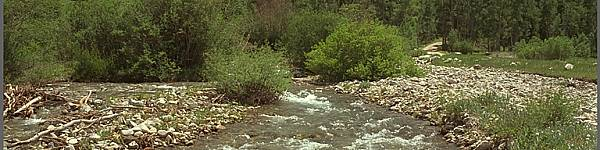

Options
This is an overview of all features by using options of CImage and img.php.
The script img.php supports options through the querystring part of the url. Combine the options to get the desired behavior and resulting image.


Example of combining options
For example, take the original image, resize it using width, aspect-ratio and crop-to-fit, apply a sharpen effect, save the image as JPEG using quality 70.
img.php?src=kodim13.png&w=600&aspect-ratio=4&crop-to-fit&sharpen&save-as=jpg&q=70
Here is a list of all parameters that you can use together with img.php, grouped by its basic intent of usage.
#Source image
Option src is the only mandatory option and it selects the source image. You can download remote images through src but this is default disabled by configuration.
| Parameter | Explained |
|---|---|
src |
Source image to use, mandatory. Use as src=img.png, src=dir/img.png or as remote download src=http://somewhere/some-image.png. |
src=dummy |
A dummy source useful as an image placeholder. |
src-alt |
An alternate image source if the primary is missing on disk. Same usage as src, but it does not work with remote images. |
There are examples on how to use these options in “Select the source”.
#Width and height
These options affects the final dimensions, width and height, of the resulting image.
| Parameter | Explained |
|---|---|
height, h |
h=200 sets the width to be to max 200px. h=25% sets the height to max 25% of its original height. |
width, w |
w=200 sets the height to be max 200px. w=100% sets the width to max 100% of its original width. |
aspect-ratio, ar |
Control target aspect ratio. Use together with either height or width or alone to base calculations on original image dimensions. This setting is used to calculate the resulting dimension for the image. w=160&aspect-ratio=1.6 results in a height of 100px. Use ar=!1.6 to inverse the ratio, useful for portrait images, compared to landscape images. |
device-pixel-ratio, dpr |
Default value is 1, set to 2 when you are delivering the image to a high density screen, dpr=2 or dpr=1.4. Its a easy way to say the image should have larger dimensions. The resulting image will be twice as large (or 1.4 times), keeping its aspect ratio. |
There are examples on how to use these options in “Resize strategies” and “Working with sizes”.
#Resize strategy
These options affect the strategy used when resizing an source image into a target image. One needs to set both width and height for the resize strategies to be used. Without both width and height set they will simply be no operations and silently ignored.
| Parameter | Explained |
|---|---|
no-ratio, nr, stretch |
Do not keep aspect ratio when resizing and using both width & height constraints. Results in stretching the image, if needed, to fit in the resulting box. |
crop-to-fit, cf |
Set together with both h and w to make the image fit into dimensions, and crop out the rest of the image. |
fill-to-fit, ff |
Set together with both h and w to make the image fit into dimensions, and fill the rest using a background color. You can optionally supply a background color as this ff=00ff00, or ff=00ff007f when using the alpha channel. |
no-upscale, nu |
Avoid smaller images from being upscaled to larger ones. Combine with stretch, crop-to-fit or fill-to-fit to get the smaller image centered on a larger canvas. The requested dimension for the target image are thereby met, but the original image will not be upscaled. |
There are examples on how to use these options in “Resize strategies”.
#Cropping part of image
These options enable to decide what part of image to use by cropping out the rest.
| Parameter | Explained |
|---|---|
crop, c |
Crops an area from the original image, set width, height, start_x and start_y to define the area to crop, for example crop=100,100,10,10 (crop=width,height,start_x,start_y). Left top corner is 0, 0. You can use left, right or center when setting start_x. You may use top, bottom or center when setting start_y. |
area, a |
Define the area of the image to work with. Set area=10,10,10,10 (top, right, bottom, left) to crop out the 10% of the outermost area. It works like an offset to define the part of the image you want to process. Its an alternative of using crop. |
There are examples on how to use these options in “Crop parts of image”.
#Set background color
Set the default background color to use when suitable.
| Parameter | Explained |
|---|---|
bg-color, bgc |
Set the background color to use (if its needed). Use six hex digits as bgc=00ff00 and 8 digits when using the alpha channel, as this bgc=00ff007f. The alpha value can be between 00 and 7f. |
There are examples on how to use this option in “Rotate non perpendicular angle” and in “Resize to fit a certain dimension”.
#Scale image BEFORE resizing
These options are executed before the image is resized.
| Parameter | Explained |
|---|---|
scale, s |
Scale the image to a size proportional to a percentage of its original size, scale=25 makes an image 25% of its original size and size=200 doubles up the image size. Scale is applied before resizing and has no impact of the target width and height. |
There are examples on how to use this option in “Scale before processing”.
#Rotate
These options are executed before the image is resized.
| Parameter | Explained |
|---|---|
rotate-before, rb |
Rotate the image before its processed, send the angle as parameter rb=45. |
auto-rotate, aro |
Auto rotate the image based on JPEG EXIF information (useful when using images from smartphones). |
These options are executed after the image is resized.
| Parameter | Explained |
|---|---|
rotate-after, rarotate, r |
Rotate the image after its processed, send the angle as parameter ra=45. |
You need the EXIF extension to support auto-rotation of JPEG-images.
There are examples on how to use these options in “Rotate images”.
#Filters and convolve expressions
These options are executed after the image is resized and applies filter and effects to the resized image.
| Parameter | Explained |
|---|---|
sharpen |
Appy a convolution filter that sharpens the image. |
emboss |
Appy a convolution filter with an emboss effect. |
blur |
Appy a convolution filter with a blur effect. |
convolve |
Appy custom convolution filter as a 3x3 matrix, a divisor and offset, convolve=0,-1,0,-1,5,-1,0,-1,0,1,0 sharpens the image. |
convolve |
Use predefined convolution expression as convolve=sharpen-alt or a serie of convolutions as convolve=draw,mean,motion. These are supported out of the box: lighten, darken, sharpen, sharpen-alt, emboss, emboss-alt, blur, gblur, edge, edge-alt, draw, mean, motion. Add your own, or overwrite existing, in img_config.php. |
f, filter |
Apply filter to image, f=colorize,0,255,0,0 makes image more green. Supports all filters as defined in PHP GD imagefilter(). |
f0, f1-f9 |
Same as filter, just add more filters. Applied in order f, f0-f9. |
sc, shortcut |
Save longer expressions in img_config.php. One place to change your favorite processing options, use as sc=sepia which is a shortcut for &f=grayscale&f0=brightness,-10&f1=contrast,-20&f2=colorize,120,60,0,0&sharpen. |
There are examples on how to use these options in “Filters and convolution”, “Filters and effects from PHP GD” and “Create shortcuts”.
#Saving image, affecting quality and file size
Options for saving the target image.
| Parameter | Explained |
|---|---|
quality, q |
Quality affects lossy compression and file size for JPEG images by setting the quality between 1-100, default is 60. Quality only affects JPEG. |
compress, co |
For PNG images it defines the compression algorithm, values can be 0-9, default is defined by PHP GD. Compress only affects PNG. |
palette, p |
Create a palette version of the image with up to 256 colors. |
save-as, sa |
Save resulting image as JPEG, PNG or GIF, for example ?src=river.png&save-as=gif. |
alias |
Save resulting image as a copy in the alias-directory. |
There are examples on how to use these options in “Quality and file size”, “JPEG quality settings” and “PNG compression levels”.
The option alias can be enabled in the config file and must be used together with a password.
#Convert to colorspace sRGB
You can convert images to colorspace sRGB.
| Parameter | Explained |
|---|---|
srgb |
Convert the image to color space sRGB. |
This option is further described in “Convert to sRGB color space”.
#Create ASCII art
You can create a ASCII version of your image.
| Parameter | Explained |
|---|---|
ascii |
Convert the image to ASCII. |
This option is further described in “ASCII art”.
#Caching
You can control which version of the image you are using, the cached version or the original version. This is useful for development and testing of CImage.
| Parameter | Explained |
|---|---|
no-cache, nc |
Do not use the cached version, do all image processing and save a new image to cache. |
skip-original, so |
Skip using the original image, always process image, create and use a cached version of the original image, even if the original is the best match. |
There are examples on how to use these options in “Troubleshoot image processing”.
#Verbose output
There are a couple of options that provides verbose output which is useful when one want to understand what happens behind the scene, or when doing testing.
| Parameter | Explained |
|---|---|
verbose, v |
Do verbose output and print out a log what happens. Good for debugging, analyzing the process and inspecting how the image is being processed. |
json |
Output a JSON-representation of the image, useful for testing or optimizing when one wants to know the image dimensions, before using it. |
status |
Output details on the system and current configuration. |
The options verbose and status is only available in development mode.
There are examples on how to use these options in “Troubleshoot image processing” and in “Check environment”.
#Password protection
Passwords are used to protect potential harmful options such as remote download of images and storing images with a new name through an alias. The password is configured in the configuration file and is disabled by default.
| Parameter | Explained |
|---|---|
pwd, password |
Use password to protect unauthorized usage. |
It could be valid to use passwords together with options for alias and when supporting remote download of images.